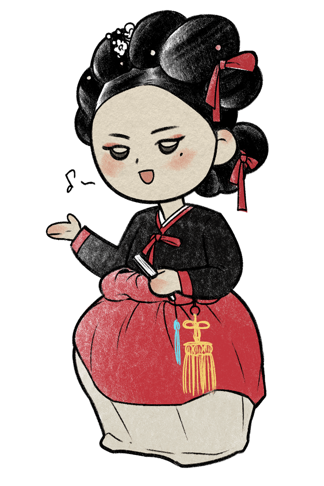
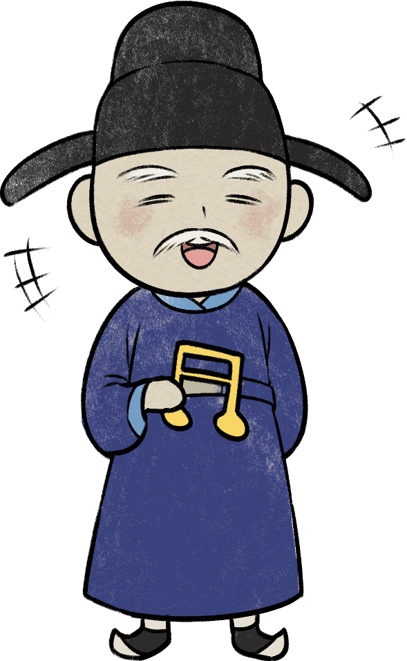

성품 유형지
세종대왕
"꺼지지 않는 열정의 불꽃! 정의로움의 인간화"

당신은 언변이 능숙하고 정의로운 성격의 유형으로 세종대왕과 비슷한 면모를 가지고 있습니다. 또한 가장 보기 드문 유형이기도 합니다.
애민정신과 외천본민(하늘을 우러러 사람을 근본으로)으로 구휼제도와 복지정책에 관심을 기울인 세종대왕처럼 당신은 연민과 동정, 이해심이 대단히 많고 인생과 인간을 따뜻하게 바라보는
낙천적인 사람입니다.
또한 집현전에 우수한 학자들을 모아두고 이들과 토론하기를 마다하지 않았던 세종대왕처럼 직관적으로 뛰어난 사람을 고르는데 능하며 타인의 관심사에 귀 기울이며 그들을 배려합니다.
하지만 간혹 배려가 지나친 나머지 오지랖이 넓다는 평가를 받기도 합니다.
그리고 더 밝은 미래의 구현을 위해 앞장서서 사람들을 이끌고 살기 좋은 공동체를 만들기 위해 사람들을 동참시키는 데서 자부심과 행복감을 느끼는 당신은 조선의 최고 성군으로
손꼽히는 세종대왕과 비슷하다고 할 수 있습니다.
다음
성품 유형지
① 곤룡포를 벗어준 따뜻한 임금
밤늦게까지 글을 읽고 있던 세종은 저 멀리 집현전에 불이 켜져 있는 걸 발견했습니다. 이를 궁금하게 여긴 세종은 내관에게 연유를 물었고 내관이 말하기를, “집현전 학사 신숙주가 글을 읽고 있사옵니다.”라고 답하니 이에 감격한 세종도 계속해서 글을 읽었습니다. 닭이 두 회를 운 뒤에야 집현전의 불이 꺼졌고, 세종이 거동하여 보니 신숙주가 책상에 엎드려 잠들어 있었습니다. 그 모습을 본 세종은 손수 자신의 곤룡포를 벗어 신숙주의 등을 덮어 주었습니다.② 애민정신 : 백성을 사랑한 임금
관청에서 일하는 여노비의 출산휴가는 일주일이었고 더군다나 주변의 도움 없이 홀로 산후조리를 하다 목숨을 잃는 경우도 있었습니다. 이를 딱하게 여긴 세종은 출산이 예정된 달을 포함해 100일을 쉴 수 있도록 명령하고 출산 한 달 전부터는 산모의 복무를 면제 시켜주었으며, 그의 남편에게도 한 달간의 산후 휴가를 주어 아내를 돌볼 수 있도록 했습니다.③ 고기반찬을 사랑하는 편식대왕
수라상에 고기반찬이 없으면 상을 쳐다보지도 않았다는 이야기가 나올 정도로 세종은 육식을 즐겼으며 편식도 심했습니다. 더군다나 운동도 좋아하지 않아 비만과 성인병에 시달렸습니다. 심지어 태종이 “주상은 사냥을 좋아하지 않지만, 몸이 비중 하니 가끔 밖에서 놀기도 해야 하므로 사냥을 함께 하면서 무사를 강습하려 한다.”라고 할 정도로 직접 세종의 건강관리를 지적하기도 했습니다.
위인소개
본명은 이도, 호는 장헌인 세종대왕은 1418년 즉위한 조선의 4대 국왕이자, 수많은 치적을 남겨 조선은 물론 한국사를 대표하는 성군으로 칭송 받고 있습니다.
어린 시절부터 일명 ‘책벌레’로 불린 세종은 아이러니하게도 이런 점 덕분에 형인 양녕대군 대신 태종에게 왕위를 물려받았습니다.
세종은 당대의 농학, 문학과 같은 분야뿐 아니라 군사와 심지어 인권에도 신경을 썼습니다. 그의 대표적인 업적으로는 훈민정음 창제와 농사직설 편찬, 대마도 정벌 등이
있습니다.

천생연분
명월 황진이

견원지간
자명 맹사성
명월 황진이 : 서로가 서로를 있는 그대로 아껴주며, 서로의 존재와 가치를 인정하는 최상의 궁합으로
쿵하면 짝하는, 서로 잘 통하는 관계입니다.
자명 맹사성 : 관계를 놓을 때까지 계속해서 충돌하는 최악의 궁합입니다. 하지만 마음을 비운다면 오히려
편안해 질 수 있습니다.
이전